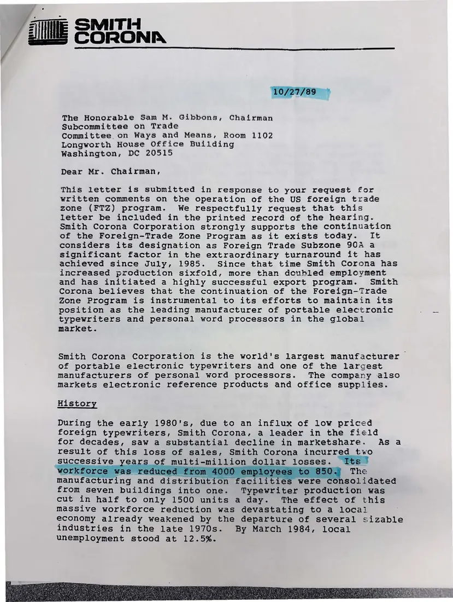
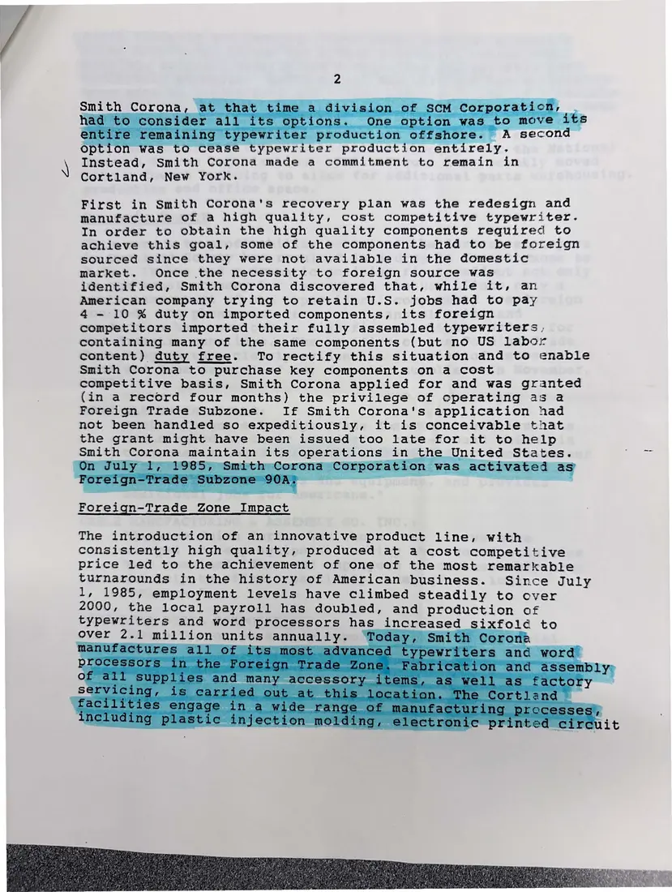
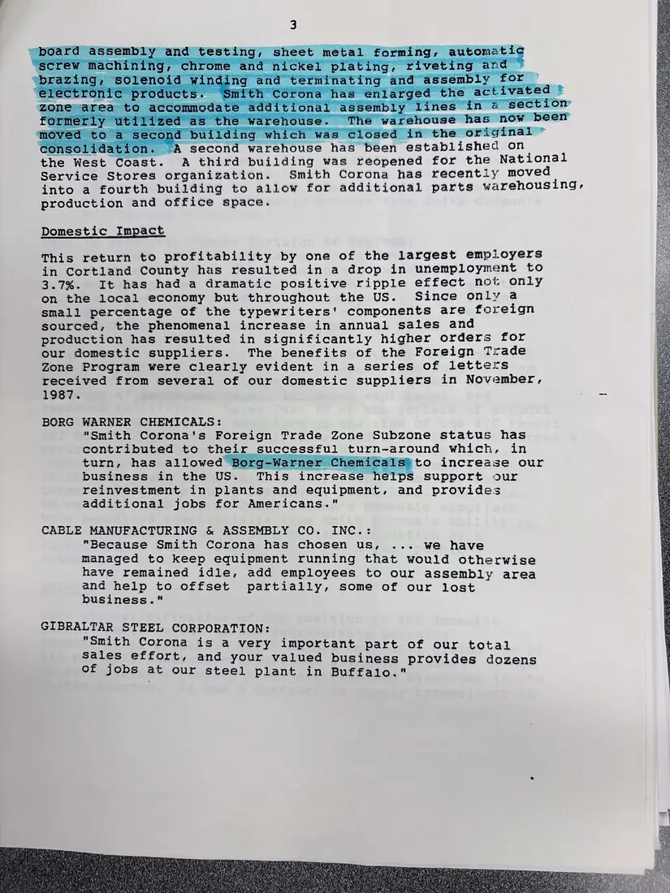
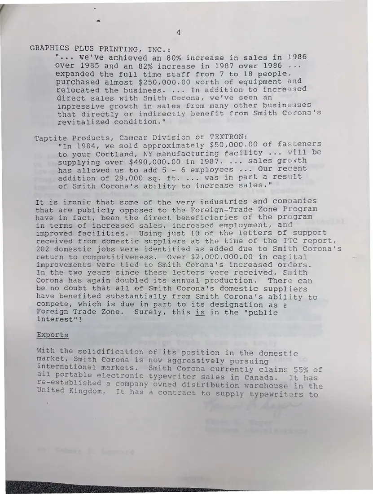
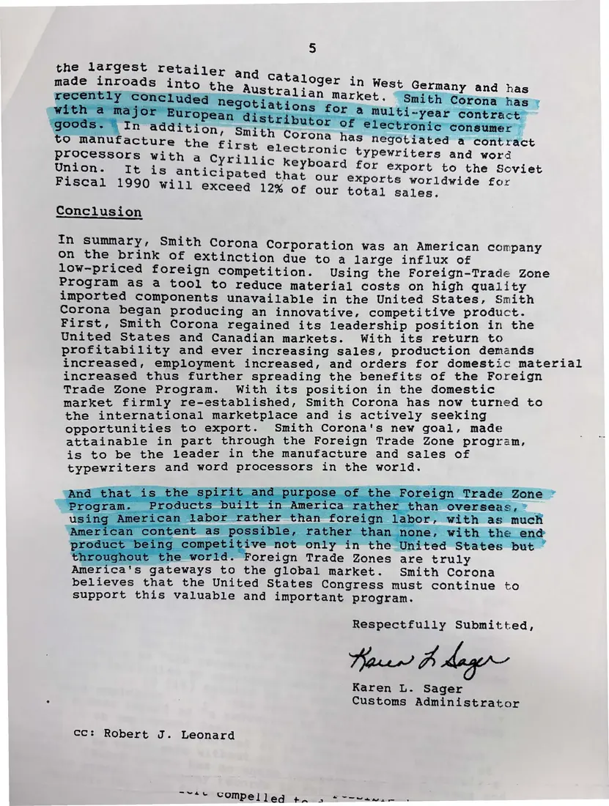

Letter, 5 pages
Smith Corona to the House Subcommittee on Trade on the foreign trade zone program
October 27, 1989
The company's customs administrator describes Smith Corona's history, its use of a foreign trade subzone in Cortland since 1985, and its suppliers. Someone later highlighted passages about the workforce falling from 4,000 to 950 and about products made abroad.
Download or cite this itemPages


(open zoom view)Read the page text (machine-read, mostly readable)
This text was generated automatically from the photograph and has not been corrected. The image is the authoritative record.
The Honorable Sam M. Gibbons, Chairman Subcommittee on Trade Committee on Ways and Means, Room 1102 Longworth House Office Building Washington, DC 20515 Dear Mr. Chairman, This letter is submitted in response to your request for written comments on the operation of the US foreign trade zone (FTZ) program. We respectfully request that this letter be included in the printed record of the hearing. Smith Corona Corporation strongly supports the continuation of the Foreign-Trade Zone Program as it exists today. It considers its designation as Foreign Trade Subzone 930A a significant factor in the extraordinary turnaround it has achieved since July, 1985. Since that time Smith Corona has increased production sixfold, more than doubled employment and has initiated a highly successful export program. Smith Corona believes that the continuation of the Foreign-Trade Zone Program is instrumental to its efforts to maintain its position as the leading manufacturer of portable electronic typewriters and personal word processors in the globai market. Smith Corona Corporation is the world's largest manufacturer | of portable electronic typewriters and one of the largest manufacturers of personal word processors. The company also markets electronic reference products and office supplies. History During the early 1980's, due to an influx of low priced foreign typewriters, Smith Corona, a leader in the field for decades, saw a substantial decline in marketshare. Asa result of this loss of sales, Smith Corona incurred two successive 2 multi-million dollar losses. naneeer uring and distribution from seven buildings into one. meeeyeltar production was cut in half to only 1500 units a day. The effect of this massive workforce reduction was devastating to a locai economy already weakened by the departure of several sizable industries in the late 1970s. By March 1984, local unemployment stood at 12.5%. RBA ORSINI TS -oys , Seve a bah) este ee


(open zoom view)Read the page text (machine-read, mostly readable)
This text was generated automatically from the photograph and has not been corrected. The image is the authoritative record.
Smith Corona, at Instead, Smith Corona made a commitment to remain in Cortland, New York. First in Smith Corona's recovery plan was the redesign and manufacture of a high quality, cost competitive typewriter. In order to obtain the high quality components required to achieve this goal, some of the components had to be foreign sourced since they were not available in the domestic market. Once the necessity to foreign source was identified, Smith Corona discovered that, while it, an American company trying to retain U.S. jobs had to pay 4 - 10 & duty on imported components, its foreign competitors imported their fully assembled typewriters, containing many of the same components (but no US labor content) duty free. To rectify this situation and to enable Smith Corona to purchase key components on a cost competitive basis, Smith Corona applied for and was granted (in a record four months) the privilege of cperating as 2 Foreign Trade Subzone. If Smith Corona's application had not been handled so expeditiously, it is conceivable that the grant might have been issued too late for it to help Smith Corona maintain its operations in the United States. Foreign-Trade Zone Impact The introduction of an innovative product line, with consistently high quality, produced at a cost competitive price led to the achievement of one of the most remarkable turnarounds in the history of American business. Since July 1, 1985, employment levels have climbed steadily to over 2000, the local payroll has doubled, and production of typewriters and word processors has increased ato Ld to over 2714 miilion units annually. 5m i: =


(open zoom view)Read the page text (machine-read, mostly readable)
This text was generated automatically from the photograph and has not been corrected. The image is the authoritative record.
ons Jation. A second warehouse has been established on) the West Coast. A third building was reopened for the National Service Stores organization. Smith Corona has recently moved into a fourth building to allow for additional parts warehousing, production and office space. Domestic Impact This return to profitability by one of the largest empioyers in Cortland County has resulted in a drop in unemployment to 3.7%. It has had a dramatic positive ripple effect not only on the local economy but throughout the US. Since only a small percentage of the typewriters' components are foreign sourced, the phenomenal increase in annual sales and production has resulted in significantly higher orders for our domestic suppliers. The benefits of the Foreign Trade Zone Program were clearly evident in a series of letters received from several of our domestic suppliers in November, 1987. sae BORG WARNER CHEMICALS: "Smith Corona's Foreign Trade Zone Subzone status has contributed to their successful turn-around which, in turn, has allowed ] Warn ‘als#to increase our business in the US. This increase support our reinvestment in plants and equipment, and provides additional jobs for Americans." CABLE MANUFACTURING & ASSEMBLY CO. INC.: "Because Smith Corona has chosen us, ... we have managed to keep equipment running that would otherwise have remained idle, add employees to our assembly area and help to offset partially, some of our lost business." GIBRALTAR STEEL CORPORATION: "Smith Corona is a very important part of our total Sales effort, and your valued business provides dozens of jobs at our steel plant in Buffalo."


(open zoom view)Read the page text (machine-read, mostly readable)
This text was generated automatically from the photograph and has not been corrected. The image is the authoritative record.
GRAPHICS PLUS PRINTING, INC.: ",.. We've achieved an 80% increase in sales in 1986 Over 1985 and an 82% increase in 1987 over 1986 .«.. expanded the full time staff from 7 to 18 people, purchased almost $250,000.00 worth of equipment and relocated the business. ... In addition to increased direct sales with Smith Corona, we've seen an impressive growth in sales from many other businesses that directly or indirectly benefit from Smith Corcona's revitalized condition." Taptite Products, Camcar Division of TEXTRON: "In 1984, we sold approximately $50,000.00 of fasteners to your Cortland, NY manufacturing fac Ley C27. *eEL P= be supplying over $490,000.00 in 1987. ... sales groath has allowed us to add 5 ~ 6 employees ..-. Our recent addition of 29,000 sq. ft. ... was in part a result of Smith Corona's ability to increase sales." It is ironic that some of the very industries and companies that are publicly opposed to the Foreign-Trade Zone Program have in fact, been the direct beneficiaries of the program in terms of increased sales, increased employment, and improved facilities. Using just 10 of the letters of support received from domestic suppliers at the time of the ITC report, 202 domestic jobs were identified as added due to Smith Corona's return to competitiveness. Over $2,000,000.00 in capital improvements were tied to Smith Corona's increased orders. In the two years since these letters were received, Smith Corona has again doubled its annual production. There can be no doubt that all of Smith Corona's domestic suppliers have benefited substantially from Smith Corona's ability to compete, which is due in part to its designation as ¢ Foreign Trade Zone. Surely, this is in the “public interest"! Exports With the solidification of its position in the domestic market, Smith Corona is now aggressively pursuing international markets. Smith Corona Surrentily Claims 55% of all portable electronic typewriter sales in Canada. It has re-established a company owned distribution warehouse in the United Kingdom. It has a contract to Supply typewriters to


(open zoom view)Read the page text (machine-read, mostly readable)
This text was generated automatically from the photograph and has not been corrected. The image is the authoritative record.
Conclusion In summary, y, Smith Corona Corporation was an American company on the brink : of extinction due to a large influx of low-priced foreign competition. Using the Foreign-Trade Zone Program as a tool to reduce material costs on high quality imported components unavailable in the United States, Smith Corona began producing an innovative, competitive product. First, Smith Corona regained its leadership position in the United States and Canadian markets. With its return to profitability and ever increasing sales, production demands increased, employment increased, and orders for domestic material increased thus further spreading the benefits of the Foreign Trade Zone Program. With its position in the domestic market firmly re-established, Smith Corona has now turned to the international marketplace and is actively seeking opportunities to export. Smith Corona's new goal, made attainable in part through the Foreign Trade Zone program, is to be the leader in the manufacture and sales of typewriters and word processors in the world. er us “the Un ‘Foreign Trade Zones are truly to the global market. Smith Corona believes that the United States Congress must continue to support this valuable and important program. America's gateways Respectfully Submitted, Pei chihene Karen L. Sager Customs Administrator cc: Robert J. Leonard ~raec compelled uk Oe ae
See something wrong, or recognize a person or event? Send a correction. If you hold rights in this item or think it should not be public, write to the same address.